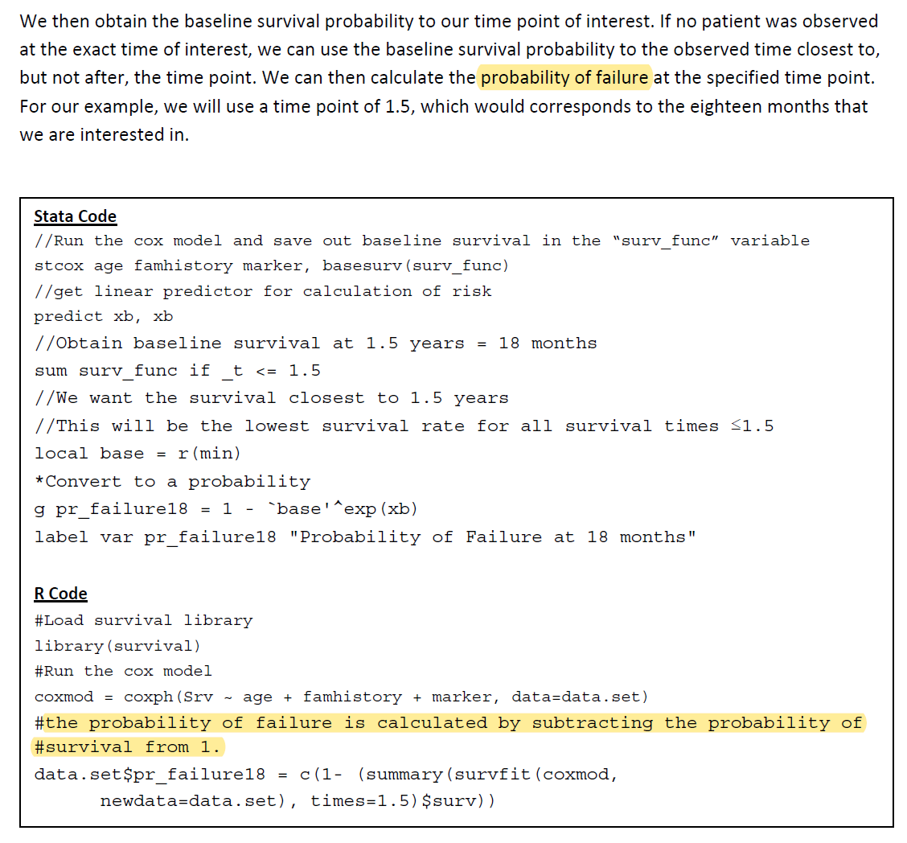

rm(list = ls())
library(survival)
lung$status <- ifelse(lung$status == 2,1,0)
lung <- na.omit(lung)
set.seed(123)
ind <- sample(1:nrow(lung),nrow(lung)*0.7)
train_df <- lung[ind,]
test_df <- lung[- ind, ]45 校准曲线和决策曲线的概率
不知道大家有没有注意过，绘制生存曲线和决策曲线都要用到概率，那到底是生存概率还是死亡概率呢？
我在学习绘制随机生存森林的校准曲线和决策曲线时，遇到了这个问题，然后认真探索了一下，发现校准曲线和决策曲线用的概率竟然是不一样的。
画COX模型的校准曲线需要实际生存概率和预测生存概率，但是关于生存概率到底是怎么算出来的，还有算出来的到底是死亡概率还是生存概率，一直搞不清楚，所以写这篇明确一下。
首先把数据集划分为训练集、测试集。
生存/死亡概率这种说法在某些数据集是成立的，比如这里的数据，其结局就是生存或者死亡。
但是某些数据的结局不是“生存/死亡”这种，可能是“患病/不患病、复发/不复发”等等情况，此时再叫生存/死亡概率就不对了，所以应该明确，使用event-probability，即终点事件发生的概率，通常终点事件是用数字1表示的，这种说法更加明确，不容易出错。（event-probability有时也被称为failure-probability）
而且生存分析作为一种在医学领域常见的方法，在其他领域应用也很广泛。
生存分析（英语：Survival analysis）是指根据试验或调查得到的数据对生物或人的生存时间进行分析和推断，研究生存时间和结局与众多影响因素间关系及其程度大小的方法，也称生存率分析或存活率分析，例如生物有机体的死亡和机械系统的故障。该主题在工程学中称为可靠性理论或可靠性分析，在经济学中称为持续时间分析或持续时间建模，在社会学中称为事件历史分析。–维基百科
对于lung这个数据集来说，event-probability就是死亡概率！
下面我们通过cox模型计算训练集的生存概率，以下是2种方法：
coxph_fit <- coxph(Surv(time, status) ~ age + sex + ph.ecog + ph.karno + pat.karno,
data = train_df,
x = T, y = T)
# 生存概率，不是event-probability
c(summary(survfit(coxph_fit), times = 100)$surv)^exp(coxph_fit$linear.predictors)
## [1] 0.6360808 0.9131269 0.8501491 0.7630865 0.8537127 0.8450658 0.9375469
## [8] 0.9032144 0.8687140 0.7228365 0.7951666 0.8733291 0.9487428 0.8544090
## [15] 0.8621303 0.8893680 0.7778119 0.9096080 0.9151944 0.8478416 0.8618016
## [22] 0.7442135 0.9244979 0.8678144 0.8184844 0.8413455 0.8541395 0.9222329
## [29] 0.8044921 0.8517422 0.8429372 0.9178130 0.9299924 0.9269818 0.8302337
## [36] 0.7211115 0.6815169 0.8089742 0.9250284 0.8259474 0.9060193 0.8827809
## [43] 0.9246432 0.7770621 0.7342281 0.8908638 0.8525153 0.8338191 0.8875361
## [50] 0.7784958 0.8967697 0.8773235 0.8527416 0.8331108 0.8530900 0.8855674
## [57] 0.8864006 0.8375345 0.7679824 0.9137828 0.8919230 0.9210974 0.8159934
## [64] 0.7815514 0.8881980 0.7694322 0.9388796 0.9078595 0.8463180 0.8917698
## [71] 0.7426331 0.8408116 0.8245471 0.8595367 0.7287534 0.8235475 0.8371881
## [78] 0.7906085 0.8396755 0.8791217 0.8724587 0.8955971 0.8426875 0.8104841
## [85] 0.8843599 0.8926688 0.8196833 0.9133560 0.8602637 0.8579585 0.8131528
## [92] 0.7767679 0.8461060 0.8504478 0.8981712 0.9002254 0.9223448 0.7819553
## [99] 0.8076380 0.8351175 0.8007977 0.8134723 0.9354309 0.9260623 0.6978048
## [106] 0.9013489 0.8112944 0.6854877 0.8853881 0.8183476 0.7124062 0.8235475
## [113] 0.9066584 0.8161488 0.8612663 0.8121238
c((summary(survfit(coxph_fit, newdata=train_df), times=100)$surv))
## [1] 0.6360808 0.9131269 0.8501491 0.7630865 0.8537127 0.8450658 0.9375469
## [8] 0.9032144 0.8687140 0.7228365 0.7951666 0.8733291 0.9487428 0.8544090
## [15] 0.8621303 0.8893680 0.7778119 0.9096080 0.9151944 0.8478416 0.8618016
## [22] 0.7442135 0.9244979 0.8678144 0.8184844 0.8413455 0.8541395 0.9222329
## [29] 0.8044921 0.8517422 0.8429372 0.9178130 0.9299924 0.9269818 0.8302337
## [36] 0.7211115 0.6815169 0.8089742 0.9250284 0.8259474 0.9060193 0.8827809
## [43] 0.9246432 0.7770621 0.7342281 0.8908638 0.8525153 0.8338191 0.8875361
## [50] 0.7784958 0.8967697 0.8773235 0.8527416 0.8331108 0.8530900 0.8855674
## [57] 0.8864006 0.8375345 0.7679824 0.9137828 0.8919230 0.9210974 0.8159934
## [64] 0.7815514 0.8881980 0.7694322 0.9388796 0.9078595 0.8463180 0.8917698
## [71] 0.7426331 0.8408116 0.8245471 0.8595367 0.7287534 0.8235475 0.8371881
## [78] 0.7906085 0.8396755 0.8791217 0.8724587 0.8955971 0.8426875 0.8104841
## [85] 0.8843599 0.8926688 0.8196833 0.9133560 0.8602637 0.8579585 0.8131528
## [92] 0.7767679 0.8461060 0.8504478 0.8981712 0.9002254 0.9223448 0.7819553
## [99] 0.8076380 0.8351175 0.8007977 0.8134723 0.9354309 0.9260623 0.6978048
## [106] 0.9013489 0.8112944 0.6854877 0.8853881 0.8183476 0.7124062 0.8235475
## [113] 0.9066584 0.8161488 0.8612663 0.8121238这两种方法计算出来的生存概率是一模一样的。
这个方法也是之前在绘制决策曲线时使用的方法：生存资料的决策曲线分析DCA
在画COX模型的决策曲线时，需要使用概率，使用的是1-summary(xxxx)。这一点在官方的说法也是很明确的，来自stdca.r脚本的官方机构：纪念斯隆-凯特琳癌症中心：

# failure probability
c(1-(summary(survfit(coxph_fit, newdata=train_df), times=100)$surv))
## [1] 0.36391922 0.08687312 0.14985089 0.23691353 0.14628733 0.15493424
## [7] 0.06245312 0.09678563 0.13128605 0.27716348 0.20483344 0.12667093
## [13] 0.05125721 0.14559099 0.13786967 0.11063201 0.22218806 0.09039195
## [19] 0.08480558 0.15215836 0.13819836 0.25578648 0.07550208 0.13218564
## [25] 0.18151559 0.15865446 0.14586054 0.07776714 0.19550795 0.14825781
## [31] 0.15706277 0.08218697 0.07000765 0.07301820 0.16976631 0.27888853
## [37] 0.31848310 0.19102579 0.07497155 0.17405255 0.09398071 0.11721909
## [43] 0.07535682 0.22293786 0.26577192 0.10913621 0.14748469 0.16618091
## [49] 0.11246388 0.22150420 0.10323032 0.12267652 0.14725839 0.16688923
## [55] 0.14691005 0.11443259 0.11359944 0.16246550 0.23201760 0.08621721
## [61] 0.10807703 0.07890259 0.18400656 0.21844859 0.11180203 0.23056777
## [67] 0.06112043 0.09214054 0.15368200 0.10823019 0.25736689 0.15918841
## [73] 0.17545294 0.14046334 0.27124664 0.17645248 0.16281191 0.20939151
## [79] 0.16032453 0.12087828 0.12754126 0.10440294 0.15731251 0.18951593
## [85] 0.11564013 0.10733123 0.18031666 0.08664403 0.13973627 0.14204145
## [91] 0.18684720 0.22323209 0.15389400 0.14955219 0.10182876 0.09977463
## [97] 0.07765520 0.21804473 0.19236203 0.16488251 0.19920229 0.18652767
## [103] 0.06456910 0.07393773 0.30219524 0.09865107 0.18870555 0.31451234
## [109] 0.11461188 0.18165243 0.28759375 0.17645248 0.09334163 0.18385122
## [115] 0.13873375 0.18787620所以，绘制决策曲线用的是event-probability，或者叫failure-probability。在以死亡为终点事件的数据中，这个概率就是死亡概率，但是某些数据的终点不是死亡，此时再叫死亡概率就容易引起混淆了。
除此之外，pec包的predictSurvProb()函数可以计算多个模型的不同数据集的event-probability，非常方便，目前此包的大部分功能都已经转移到riskRegression包中，且predictSurvProb()的功能已经被更为强大的predictRisk替代。
帮助文档写的很清楚，就是：Extract event probabilities…：
library(riskRegression)
## Warning in .recacheSubclasses(def@className, def, env): undefined subclass
## "ndiMatrix" of class "replValueSp"; definition not updated
## riskRegression version 2023.09.08
# event probability 这个例子是死亡概率
c(predictRisk(coxph_fit, newdata = train_df, times = 100))
## [1] 0.36391922 0.08687312 0.14985089 0.23691353 0.14628733 0.15493424
## [7] 0.06245312 0.09678563 0.13128605 0.27716348 0.20483344 0.12667093
## [13] 0.05125721 0.14559099 0.13786967 0.11063201 0.22218806 0.09039195
## [19] 0.08480558 0.15215836 0.13819836 0.25578648 0.07550208 0.13218564
## [25] 0.18151559 0.15865446 0.14586054 0.07776714 0.19550795 0.14825781
## [31] 0.15706277 0.08218697 0.07000765 0.07301820 0.16976631 0.27888853
## [37] 0.31848310 0.19102579 0.07497155 0.17405255 0.09398071 0.11721909
## [43] 0.07535682 0.22293786 0.26577192 0.10913621 0.14748469 0.16618091
## [49] 0.11246388 0.22150420 0.10323032 0.12267652 0.14725839 0.16688923
## [55] 0.14691005 0.11443259 0.11359944 0.16246550 0.23201760 0.08621721
## [61] 0.10807703 0.07890259 0.18400656 0.21844859 0.11180203 0.23056777
## [67] 0.06112043 0.09214054 0.15368200 0.10823019 0.25736689 0.15918841
## [73] 0.17545294 0.14046334 0.27124664 0.17645248 0.16281191 0.20939151
## [79] 0.16032453 0.12087828 0.12754126 0.10440294 0.15731251 0.18951593
## [85] 0.11564013 0.10733123 0.18031666 0.08664403 0.13973627 0.14204145
## [91] 0.18684720 0.22323209 0.15389400 0.14955219 0.10182876 0.09977463
## [97] 0.07765520 0.21804473 0.19236203 0.16488251 0.19920229 0.18652767
## [103] 0.06456910 0.07393773 0.30219524 0.09865107 0.18870555 0.31451234
## [109] 0.11461188 0.18165243 0.28759375 0.17645248 0.09334163 0.18385122
## [115] 0.13873375 0.18787620结果和上面的1-summary(xxx)计算的是一样的。
再看一个cph模型，计算生存概率（非终点事件概率）：
suppressMessages(library(rms))
dd <- datadist(train_df)
options(datadist = "dd")
cph_fit <- cph(Surv(time, status) ~ age + sex + ph.ecog + ph.karno + pat.karno,
data = train_df,
x = T, y = T
,surv = T,
time.inc = 100
)
c(cph_fit$surv.summary[2,1,1]^exp(cph_fit$linear.predictors))
## 218 22 69 163 60 227 225 205
## 0.6360808 0.9131269 0.8501491 0.7630865 0.8537127 0.8450658 0.9375469 0.9032144
## 123 124 216 125 186 135 94 38
## 0.8687140 0.7228365 0.7951666 0.8733291 0.9487428 0.8544090 0.8621303 0.8893680
## 10 211 107 111 222 141 162 102
## 0.7778119 0.9096080 0.9151944 0.8478416 0.8618016 0.7442135 0.9244979 0.8678144
## 194 45 148 203 202 99 34 72
## 0.8184844 0.8413455 0.8541395 0.9222329 0.8044920 0.8517422 0.8429372 0.9178130
## 182 185 47 90 219 195 84 21
## 0.9299924 0.9269818 0.8302337 0.7211115 0.6815168 0.8089742 0.9250285 0.8259475
## 112 131 166 213 37 53 31 109
## 0.9060193 0.8827809 0.9246432 0.7770621 0.7342281 0.8908638 0.8525153 0.8338191
## 57 65 228 81 128 26 127 9
## 0.8875361 0.7784958 0.8967697 0.8773235 0.8527416 0.8331108 0.8530899 0.8855674
## 145 177 118 190 54 43 200 226
## 0.8864006 0.8375345 0.7679824 0.9137828 0.8919230 0.9210974 0.8159934 0.7815514
## 180 7 174 179 169 71 32 122
## 0.8881980 0.7694322 0.9388796 0.9078595 0.8463180 0.8917698 0.7426331 0.8408116
## 191 208 119 48 55 42 19 144
## 0.8245471 0.8595367 0.7287534 0.8235475 0.8371881 0.7906085 0.8396755 0.8791217
## 196 85 221 93 88 188 165 50
## 0.8724587 0.8955971 0.8426875 0.8104841 0.8843599 0.8926688 0.8196833 0.9133560
## 11 70 187 142 106 64 27 83
## 0.8602637 0.8579586 0.8131528 0.7767679 0.8461060 0.8504478 0.8981712 0.9002254
## 101 73 212 35 189 173 204 168
## 0.9223448 0.7819553 0.8076380 0.8351175 0.8007977 0.8134723 0.9354309 0.9260623
## 116 160 113 39 59 8 155 159
## 0.6978048 0.9013489 0.8112945 0.6854876 0.8853881 0.8183476 0.7124062 0.8235475
## 89 149 171 18
## 0.9066584 0.8161488 0.8612663 0.8121238校准曲线的使用的是非终点事件概率，在lung这个数据集中就是生存概率，关于它的详细介绍，请参考推文：Cox回归校准曲线(测试集)的实现方法（下）
参考文章：
- pec:https://stats.stackexchange.com/questions/36015/prediction-in-cox-regression
- 维基百科：https://zh.wikipedia.org/zh-cn/%E7%94%9F%E5%AD%98%E5%88%86%E6%9E%90
- 生存分析：https://zhuanlan.zhihu.com/p/367879967
- dca官方文档：dca-tutorial-2015-2-26.pdf
- 失效事件failure-event：https://www.jianshu.com/p/1a8ee973b45f